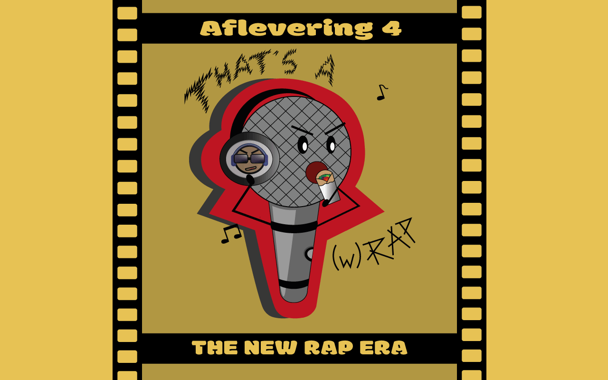

Afleveringen
Meest recente afleveringen
The '90s game changers
‘’Rap was vroeger veel beter.’’ Je hebt het vast wel eens gehoord maar welke artiesten maakten het nou zo goed?
In deze aflevering gaan we terug in de tijd naar de jaren ’90 om erachter te komen wie de bekendste artiesten waren. Sommige van hun nummers zijn tegenwoordig nog steeds erg bekend. We kennen zo allemaal 'California Love' van 2Pac.
The power of lyrics
Wees voorbereid voor alle mixed feelings die je zult krijgen in deze aflevering!
Wij gaan het namelijk hebben over de emoties en de achterliggende gedachte in rapmuziek. ‘Wat bedoelt deze rapper nou met bepaalde lyrics? Wat zegt het toongebruik en klank over zijn emoties?’ Wil jij je inleven in de lyrics van je favoriete rapartiesten? Kijk dan vooral naar onze aflevering.
The new rap era
“Gen-Z onder de loep.”
In deze aflevering gaan wij op zoek naar de bekendste artiesten van tegenwoordig. Daarbij bespreken we de huidige rap-trends. Ken jij bijvoorbeeld de rap-stijlen van nu? En weet je wie of wat populair is? Stay tuned want je gaat er nu achter komen!
Bekijk alle afleveringen
- The rap future
- Transforming ever sound
- Will women take over?